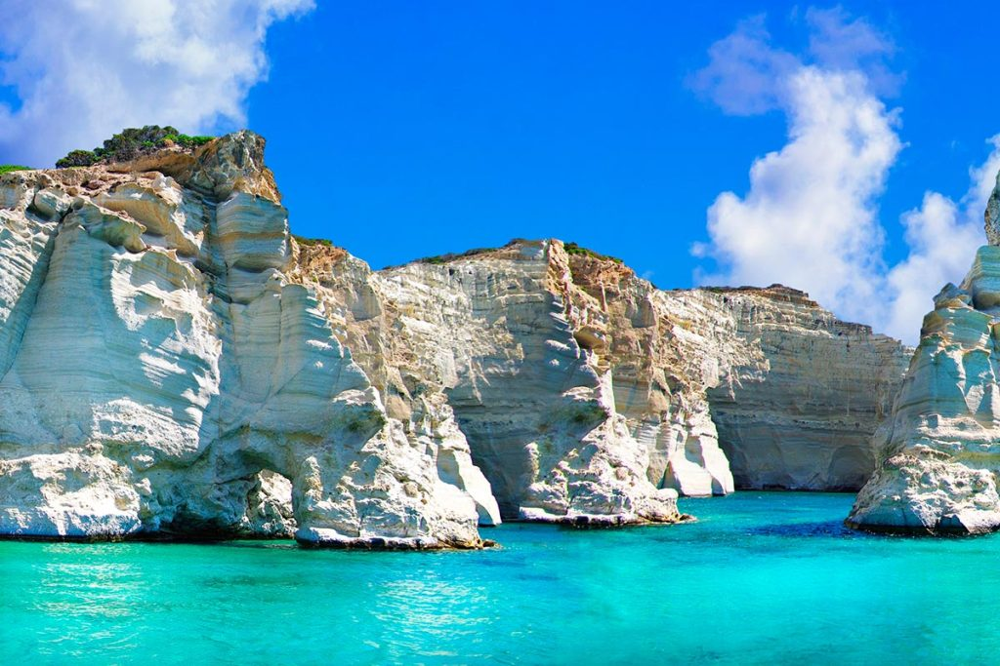
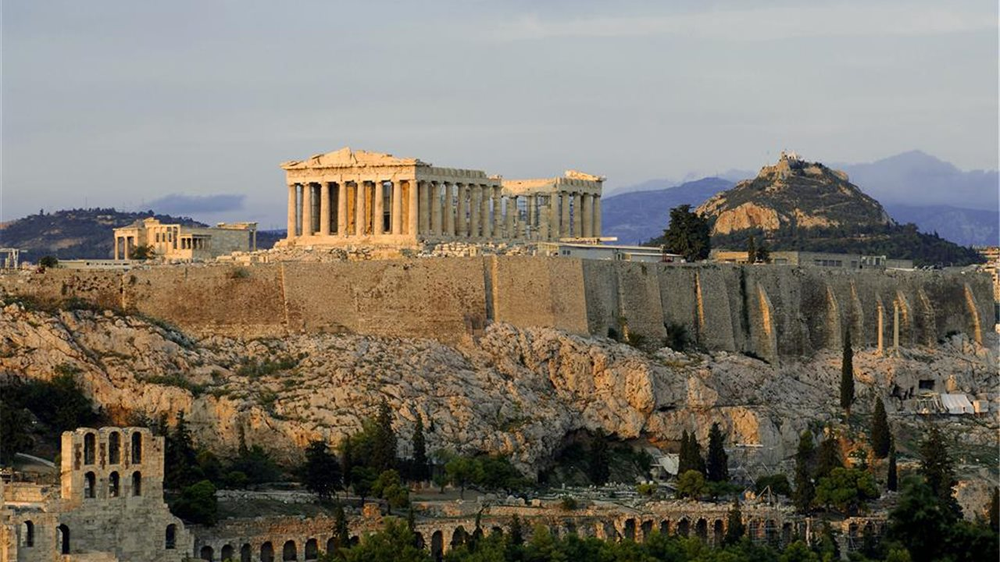

Grecia es famosa por ser el lugar donde nació la historia del mundo occidental. Su cultura está llena de leyendas de dioses, antiguos teatros y templos increíbles como la Acrópolis. Además, la gente es muy alegre y su comida es deliciosa y saludable, con platos llenos de queso, aceitunas, pescado fresco y aceite de oliva.
El paisaje es hermoso porque mezcla montañas altas con un mar azul brillante. Grecia tiene miles de islas con playas de agua cristalina y los típicos pueblos con casas blancas y techos azules. También tiene lugares únicos en la tierra, como los enormes muros de piedra de Meteora, donde hay iglesias construidas en las alturas.
Para los viajeros, es un destino perfecto para pasear y descansar. Muchos van a las islas de Santorini y Mykonos para ver los atardeceres y disfrutar de la playa. Otros prefieren recorrer Atenas o la isla de Creta para conocer castillos y ruinas antiguas, disfrutando siempre de la amabilidad de los locales.
Σὲ γνωρίζω ἀπὸ τὴν κόψι
τοῦ σπαθιοῦ τὴν τρομερή,
σὲ γνωρίζω ἀπὸ τὴν ὄψι
ποὺ μὲ βία μετράει τὴ γῆ.
Ἀπ’ τὰ κόκκαλα βγαλμένη
τῶν Ἑλλήνων τὰ ἱερά,
καὶ σὰν πρῶτα ἀνδρειωμένη,
χαῖρε, ὦ χαῖρε, Ἐλευθεριά!

